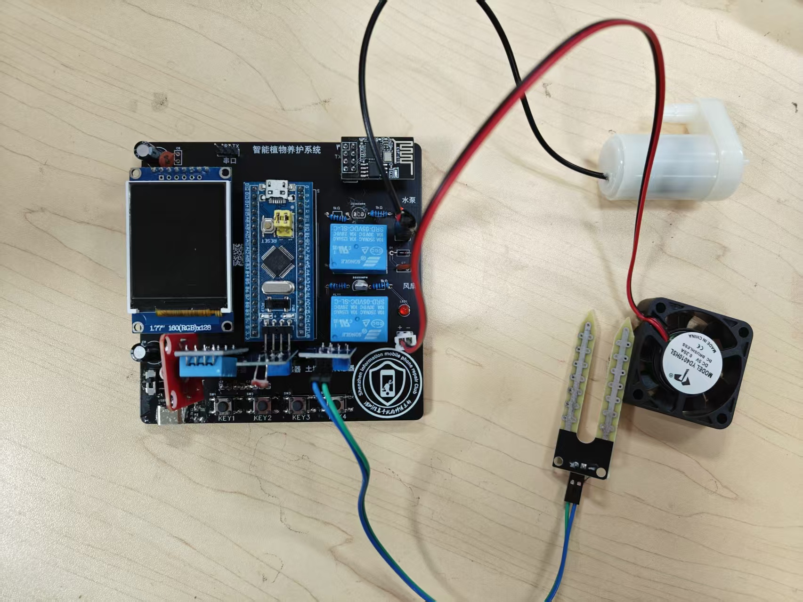
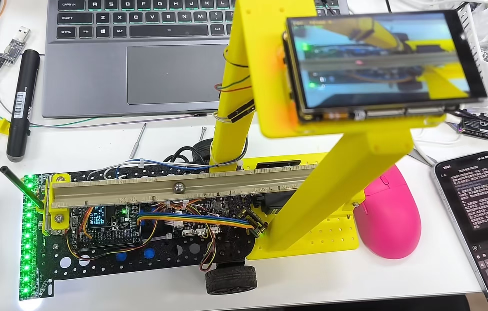

在打印窗口选择“另存为 PDF”
求职意向：外贸业务员 / 外贸助理 实习生
📧 2647703552@qq.com · 📱 19880841256 · 🏠 现居深圳
电子信息类专业在读，熟悉电子产品从设计、装配到成品的完整流程，能看懂原理图与产品参数， 具备讲解产品功能与卖点的表达能力。已通过英语四级，可阅读英文规格书与技术资料、 撰写和回复基础英文邮件。担任班级学习委员，沟通协调与事务跟进能力较强， 做事细致、愿意从外贸助理做起，逐步独立开发客户。
🏅 成绩排名：专业前 5%，班级第 1 · 👥 班级职务：班级学习委员
📖 主修课程：程序设计基础、单片机应用技术、数字电子技术、模拟电子技术、PCB 设计、Linux 系统编程、计算机视觉
负责作业收发、考试与课程通知、学习资料整理，作为任课老师与全班同学之间的沟通桥梁， 保证信息传达及时准确；配合班委完成班级日常事务与活动组织。
参与班级管理与活动组织，协调同学分工、跟进事务进度， 获校级“优秀学生骨干”“优秀学生干部”称号。
与队友分工协作完成参赛作品，负责部分程序设计与整车联调， 按赛题节点推进调试并获省二等奖，锻炼团队协作与现场问题处理能力。

独立完成从方案设计到成品落地的完整项目：电路搭建、传感器与执行器接线、 焊接装配、板级调试及全部程序开发，并通过 MQTT 将数据上传至云平台。
熟悉传感器、执行器与联网模块的选型配合，能清楚讲解产品功能、参数与应用场景， 理解电子产品从设计、打样到成品的流程。

3 人团队协作完成循线小车与摆杆控制系统，负责循迹与摆杆闭环控制程序， 并承担整车软硬件联调。按赛题节点推进调试，最终获省二等奖。
在有限时间内完成分工配合与问题排查，锻炼了团队协作、进度跟进和现场执行能力。
在校完成多个电子产品的原理图绘制、PCB Layout、焊接装配与功能调试实训， 熟悉电子产品的生产装配流程与常见焊接工艺，对消费类电子产品的结构与功能有直观认识。